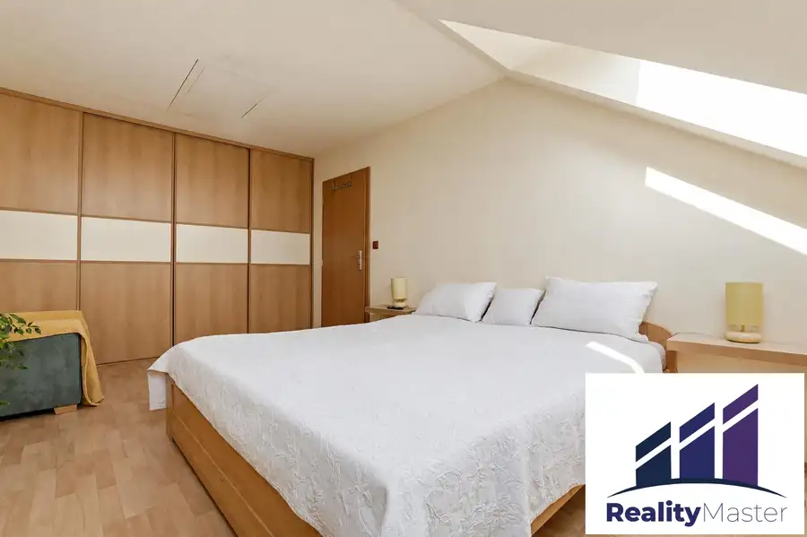
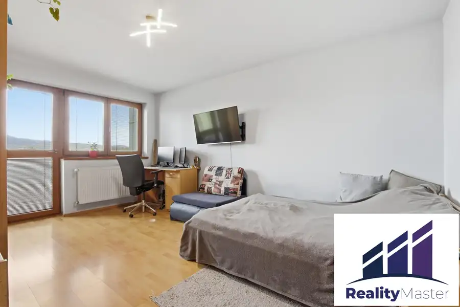
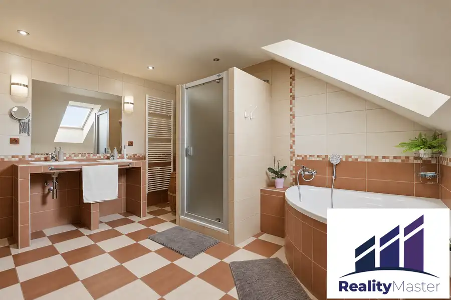

Zariadený 4 izb. byt 141m², murovaný dom - Trnavská, Pezinok
Pezinok




- Dispozícia4-izbový
- Plocha149.5 m²
- Poschodie4. z 4
- StavKompletná rekonštrukcia
- VlastníctvoOsobné
O nehnuteľnosti
RealityMaster ponúka exkluzívne na predaj 4-izbový byt o výmere 141,49m² + pivnica 8m², ako jediný byt v nadstavbe bytového domu na 4. poschodí z 4, ulica Trnavská, Pezinok. Príjemný, svetlý byt na pokojnom a vybavenom sídlisku Muškát, v 4 podlažnom murovanom bytovom dome iba so 7 bytmi, veľmi blízko do centra Pezinka. Byt je kompletne zariadený, klimatizovaný a vhodný na nasťahovanie.Pozrite si 3D prehliadku tu: https://my.matterport.com/show/?m=KWTFWLTFmZtBYTOVÝ DOMBytový dom je trojpodlažný s nadstavbou obytného podkrovia, skolaudovanou v roku 2011, vo veľmi dobrom stave, zateplený, tehlový, bez výťahu. Vo vchode je iba 7 bytov. Spolu s nadstavbou podkrovia boli realizované nové rozvody plynu, kúrenia, omietky, zateplenie, plastové okná na schodiskách aj v podzemnom podlaží. Bytový dom je pripojený na všetky inžinierske siete. Každý byt je vykurovaný samostatne. Dostupné sú TV a optický internet všetkých väčších poskytovateľov. V poslednom období bol menený systém vchodového vrátnika a čítačka kariet a opravená strecha.BYT4-izbový byt sa nachádza na 4. poschodí, ako jediný byt na poschodí v realizovanej nadstavbe z roku 2011. Dispozične pozostáva z predsiene, kuchyne, kúpeľne, samostatného WC, obývacej izby s jedálenskou a pracovnou časťou a 3 samostatných spální. Z jednej zo spální je prístupná loggia o výmere 3,13m2. K bytu prislúcha pivnica v podzemnom podlaží o výmere 8m². Celková výmera podlahovej plochy bytu s príslušenstvom, loggiou a pivnicou je je 149,49m². Nad celým bytom sa nachádza povala, prístupná z jednej zo spální, časť z nej je využívaná ako odkladací priestor.Byt bol spolu s nadstavbou bytového domu skolaudovaný v roku 2011, s novými rozvodmi elektriny, vody, kanalizácie, kúrenia, plynovým kotlom ÚK zn. Buderus a stojatým zásobníkom na prípravu TÚV. Okná sú plastové s izolačným dvojsklom, plechové radiátory Korado, byt je plne klimatizovaný 3 vnútornými jednotkami v obývačke a 2 spálňach. V obývačke je prístupný komín a je možné tu zrealizovať krb. Byt sa predáva zariadený:Kuchyňa - kuchynská linka so zabudovanými spotrebičmi, elektrická rúra, sklokeramická varná doska, mikrovlnná rúra, veľká chladnička, samostatná mraznička, umývačka riadu (spotrebiče zn. Whirlpool) drez s pákovou batériou, Obývačka – veľká sedacia súprava, kreslo, barový pult s barovými stoličkami, jedálenský stôl so stoličkami, konferenčný stôl, skrinka pod TV, TV, knižnica, 2xkomoda, pracovný stôl, skriňaKúpeľňa – vaňa aj samostatný sprchový kút, 2x umývadlo, práčka, sušičkaSamostatné WC s umývadlom a plynovým kotlomSpálňa 1 – manželská posteľ, veľká vstavaná skriňa, kresloSpálňa 2 – manželská posteľ, skriňa, 2x, komoda, pracovný stôl, TV, kresloSpálňa 3 – manželská posteľ, skriňa, polica, komoda, pracovný stôl, TV, kresloPredsieň – úložný priestor, vešiaková zostava so zrkadlomMesačné náklady pre 4 osoby sú cca 330€ (správca, voda, elektrina, plyn)LOKALITAByt sa nachádza v atraktívnej a obľúbenej lokalite mesta Pezinok na sídlisku Muškát, na Trnavskej ulici, pohodlne sa dostanete do centra mesta (do 10 min pešo) s pokojnou atmosférou rezidenčnej štvrte. V pešej dostupnosti sa nachádzajú potraviny CBA, lekárne, na skok je Lidl a mnoho prevádzok v rámci OC BOZIN Shopping. Lokalita ponúka kompletnú občiansku vybavenosť, výborné dopravné napojenie smerom na Bratislavu aj pohodlný prístup k železničnej stanici. Pezinok je známy aj svojím vinárskym rázom, bohatým spoločenským životom a blízkosťou Malých Karpát, ktoré poskytujú ideálne podmienky na oddych, turistiku a športové aktivity.V cene je zahrnutá provízia realitnej kancelárie, v rámci ktorej poskytujeme kompletný právny servis, vybavenie najvýhodnejšej hypotéky a spracovanie celého procesu od obhliadky po odovzdanie bytu, vypracovanie zmlúv, vklad vlastníckeho práva do katastra vrátane správnych poplatkov a zastrešenie celého procesu financovania či poistenia Vašej novej nehnuteľnosti. Prevedieme Vás celým procesom predaja rýchlo a bezpečne. Ak Vás naša ponuka zaujala, dohodnite si obhliadku:Samuel Bokroš tel. č.: 0944 689 740e-mail: bokrossamuel@realitymaster.sk
Parametre
- Cellar area
- 8 m²
- Cena vrátane energií
- Nie
- Druh
- 4 izbový byt
- Dátum zverejnenia
- 17. 06. 2026
- Energie
- 200
- Plocha lodžie
- 3.13 m²
- Podlažie
- 4
- Počet izieb / miestností
- 4
- Počet lodžií
- 1
- Počet nadzemných podlaží
- 4
- Počet pivníc
- 1
- Rok kolaudácie
- 2011
- Stav nehnuteľnosti
- Kompletná rekonštrukcia
- Telekomunikácie
- Telefón, Internet, Káblová TV, Optická sieť
- Typ
- Predaj
- Typ konštrukcie
- Tehlová
- Umiestnenie
- Ďalšie nadzemné podlažie
- Vlastníctvo
- Osobné
- Vybavenie
- Lodžia, Pivnica, Verejné parkovanie
- Vykurovanie
- Lokálne, Klimatizacia
- Zariadenie
- Zariadené kompletne
- Úžitková plocha
- 149.5 m²